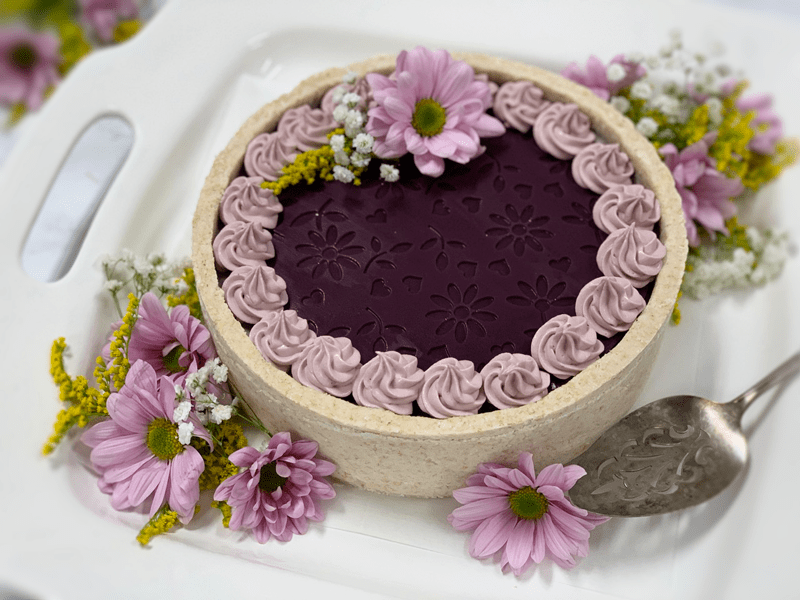
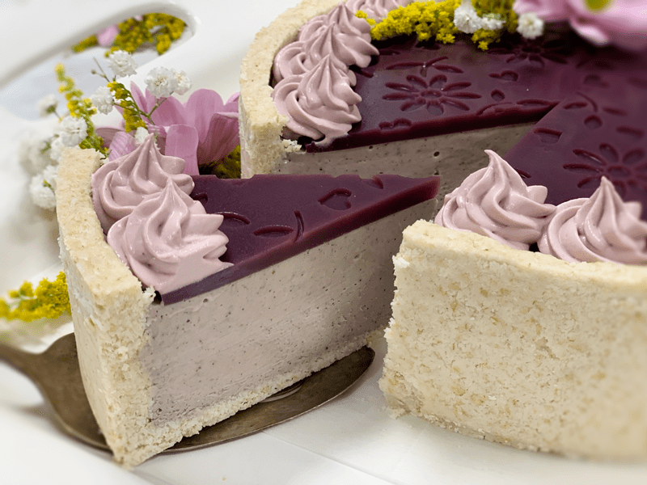
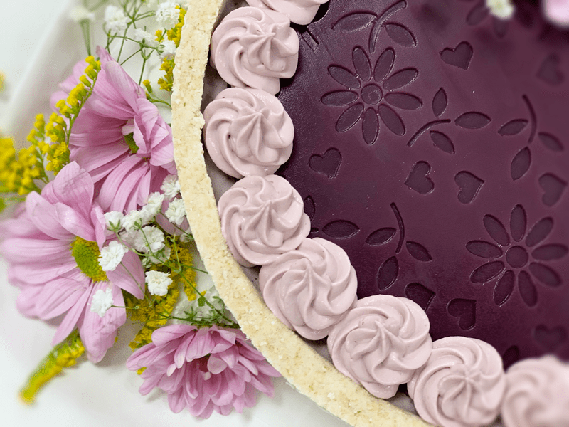

Amethyst Blueberry Cheesecake

This cheesecake has to be one of my favorite raw cheesecakes that I have made to date. Keep in mind that I said “to date“… because with each new creation my mind and taste buds quickly shift. It is a good thing; trust me. I think what struck me the most about this cheesecake is how the pale color of lavender complemented the vibrant jewel Amethyst coloring, providing a gorgeous contrast of colors.

I think I have dreamt about the design of this cheesecake for roughly half a year. I am not sure why it took so long to work on it, other than I have a long list of recipes that I dream about creating. I never “force” a recipe on myself. I have to be inspired and because I allow passion to drive my culinary creations. I honestly feel that is why I continue to do what I do a decade later.

Food is another art medium for me to unleash my creativity. I have been artsy since I was a tiny girl. My great grandmother taught me how to sew on a machine when I was learning to ride a bike. At the age of twelve, our eighty-year-old neighbor taught my mom and me how to cover school pencil boxes with batting and fabric. That was back in the day before I even knew hot glue guns existed. I remember using Elmer’s glue and sitting there holding the glued fabric in place until it dried enough to move on to the other side of the box. Oh, the days of patience. lol

Throughout those years, I have dabbled in every art medium that exists, and I have enjoyed them all. It wasn’t until the age of thirty-six (ish) that I got into the culinary scene. When I go shopping, I look at things differently. In the hardware store, Bob will find me daydreaming as I stare at trowels. “Is something wrong?” he would ask. “Nope, I was just wondering if this trowel would be good for spreading crackers batters? Or I will be in the plumbing aisle, and I would turn to Bob and say, “If only this PVC piping were food grade, it would make a great mold.”
One afternoon, my friend Leesa and I were at the craft store, and she found me down the stencil aisle. “Are you going to paint a stencil on the wall?” she asked. “Nope, I was thinking I would use this to leave an impression on a cheese recipe I am working on.” She giggled and told me that I see things in a different light.
I guess I ought to get to the point with all this. A while back, I was lolly-gaging around Michael’s Craft Store, and I spotted a Silicone Fondant impression mat that was 50% off. I don’t use fondant in my raw creations, but I just knew that I would find a way to utilize this fun mat. I will post a link to what I am referring to, but it’s not the exact pattern as mine. Click (here) to see the design of these mats.

If you decide to make this cheesecake, I promise you that it will be the star attraction. If purple isn’t your color, click on the following link on How to Create Natural Food Colors. To learn how I make beautiful clean cuts, I created a post on How to Slice a Cheesecake. Unsure how to use a Springform pan? Not to worry, read about Perfecting the Springform Pan and Crusts. I try never to leave you hanging! So, let’s strap that apron on and dirty up some dishes! Please leave a comment below and have blessed day, amie sue
 Ingredients:
Ingredients:
9″ Springform pan
Crust:
- 1 cup rolled gluten-free oats, soaked & dehydrated
- 2 1/4 cups shredded coconut
- 1/4 tsp Himalayan pink salt
- 1/2 tsp liquid stevia
- 2 Tbsp melted coconut oil
- 1/2 cup water
- 2 Tbsp maple syrup
Filling:
- 2 1/2 cups raw cashews, soaked 2+ hours
- 1 3/4 cups raw coconut milk
- 1 cup fresh blueberries
- 3/4 cup maple syrup
- 3 Tbsp lemon juice
- 2 tsp vanilla extract
- 1/2 tsp NuNaturals liquid stevia
- 1/4 tsp Himalayan pink salt
- 3/4 cup raw cold-pressed coconut oil, melted
- 2 Tbsp lecithin powder
Blueberry Agar Decoration
- 1 cup fresh organic blueberries
- 1 cup water
- 2 Tbsp maple syrup
- 1 Tbsp agar powder
Frosting (optional)
Preparation:
Crust:
- Assemble a Springform pan with the bottom facing up, the opposite way from how it comes. This assembly will help you when removing the cheesecake from the pan, not having to fight with the lip. Wrap the base with plastic wrap to make it easier to remove the pie when done, unless you plan on serving the cake on the bottom of the pan.
- Place the oats, coconut, and salt in the food processor, fitted with the “S” blade and process until the coconut is broken down to a fine of a powder. It took about 30 seconds with my machine.
- Add stevia, coconut oil, water, and maple syrup. Process until the mixture sticks together when pinched.
-
Distribute the crust evenly on the bottom of the pan, using even and gentle pressure. If you press too hard, it might stick to the base of the pan, making it hard to remove slices.
- See the “crust photo” below on what style of crust you want to create.
-
Set aside while you make the cheesecake batter.
Filling:
- Drain the soaked cashews and discard the soak water. Place in a high-speed blender.
- In a high-powered blender combine the cashews, coconut milk, blueberries, maple syrup, lemon juice, vanilla, stevia, and salt.
- Due to the volume and the creamy texture that we are going after, I recommend using a high-powered blender. It could be too taxing on a lower-end model.
- Blend until the filling is creamy smooth. You shouldn’t detect any grit. If you do, keep blending.
- This process can take 2-4 minutes, depending on the strength of the blender. Keep your hand cupped around the base of the blender carafe to feel for warmth. If the batter is getting too warm, stop the machine and let it cool. Then proceed once cooled.
- With a vortex going in the blender, drizzle in the coconut oil and then add the lecithin. Blend just long enough to incorporate everything together, don’t overprocess. The batter will start to thicken.
- What is a vortex? Look into the container from the top and slowly increase the speed from low to high, the batter will form a small vortex (or hole) in the center. High-powered machines have containers that are designed to create a controlled vortex, systematically folding ingredients back to the blades for smoother blends and faster processing, instead of just spinning ingredients around, hoping they find their way to the blades.
- If your machine isn’t powerful enough or built to do this, you may need to stop the unit often to scrape the sides down.
- Pour the filling into the premade crust and gently tap the pan on the counter to remove any air bubbles.
-
Chill in the freezer for 4-6 hours and then in the fridge for 12 hours.
-
Store the cheesecake in the fridge for three to five days or up to three months in the freezer. Be sure that they are well sealed to avoid fridge odors.
Blueberry Agar Decoration
This part is optional but sure is a lot of fun. I suggest making this when ready to serve the cheesecake as it doesn’t freeze well.
- Decide on what mold you want to use for your design. If it is made from silicone, place it on a cookie sheet so you can transfer it with ease once you pour the mixture into it.
- In the blender combine the blueberries, water, and maple syrup.
- Once well blended, pour the mixture through a nut bag to strain out any blueberry skins.
- Pour into a small saucepan, add the agar powder, whisk together, and let the agar bloom for about five minutes.
- Turn the burner on to medium and once the mixture starts to create soft bubbles, turn the heat down to simmer and cook for roughly five minutes until the agar is dissolved.
- Pour the mixture in the selected mold and chill until firm (takes about thirty minutes).
- Place on top of the cheesecake and decorate.
Frosting:
- If you wish to add some frosting decor to the cheesecake as I did, you will want to make the White Frosting recipe. If you don’t plan on using frosting for any other dessert, I recommend cutting the recipe in half when you make it since it yields 5 cups of frosting.
- I took 1 cup of white frosting and added enough blended/strained blueberry slurry to create the color I wanted.
- For the piping tip, I used (this) one.
© AmieSue.com